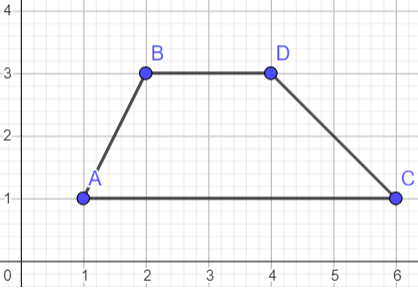

Meghatározás
A geometriában a négyszög olyan sokszög, amelynek négy oldala és négy csúcsa van. A belső szögeinek összege 360°.
Rendszerezés
A négyszögek lehetnek egyszerűek (önmagukat nem metszők) vagy elfajultak (önmagukat metszők). Az egyszerű négyszögek továbbá lehetnek konvexek vagy konkávak.
Nevezetes négyszögek
Trapéz
A geometriában trapéznak nevezik az olyan négyszöget, amelynek van két egymással párhuzamos oldala. Ha a másik két szemközti oldal szintén párhuzamos egymással, akkor a trapéz egyben paralelogramma is.
Paralelogramma
A paralelogramma egy olyan geometriai forma, amelynek A paralelogramma olyan négyszög, amelynek két-két szemközti oldala párhuzamos, két-két szemközti oldalának a hossza egyenlő, szemközti szögei váltószögek. Átlói felezik egymást, metszéspontjuk a szimmetriaközéppont.
Téglalap
A téglalap egy olyan négyszög, amelynek minden szöge derékszög. Két-két szemközti oldala egyenlő hosszúságú, ezért minden téglalap egyben paralelogramma is. És négy derékszöge van. Területe a két oldal szorzata: T=a*b
Négyzet
A négyzet egyenlő oldalú téglalap, vagyis olyan sokszög, melynek négy egyenlő oldala és négy egyenlő szöge, mégpedig derékszöge van.
Rombusz
A rombusz szemközti oldalai párhuzamosak és szemközti szögei egyenlőek, ezért a paralelogramma speciális esete, szomszédos oldalai egyenlő hosszúak.